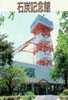

宇部市石炭記念館
| 所在地・電話番号 |
山口県宇部市則貞３−４−１ 常盤（ときわ）公園内 電話０８３６−３１−５２８１ |
| 展示の概要 |
屋内には坑道、採炭現場、炭鉱住宅が再現展示され、屋外には人車、矢弦車（やげんぐるま）、
坑内石炭運搬車などが展示されている。また、東見初炭鉱から移設された立て坑やぐらが展望台
として活用されている。なお、常盤公園は「桜の名所１００選」にも選ばれている。 |
| 開館時間・休館日・観覧料 |
入館料は無料ながら常盤公園入園券大人４６０円が必要である |
| 交通案内 |
ＪＲ常盤駅より徒歩約１５分、中国自動車道小郡インターより車で４０分 |
